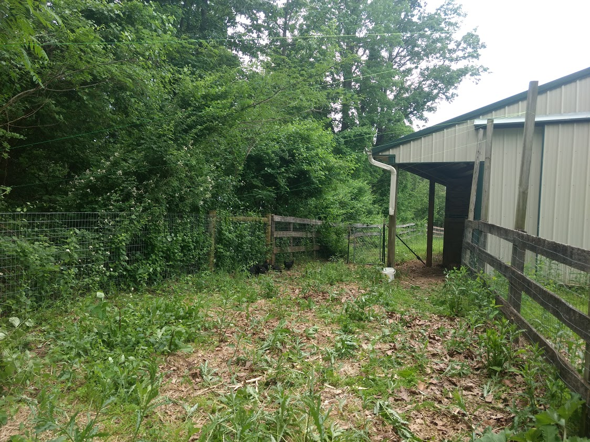
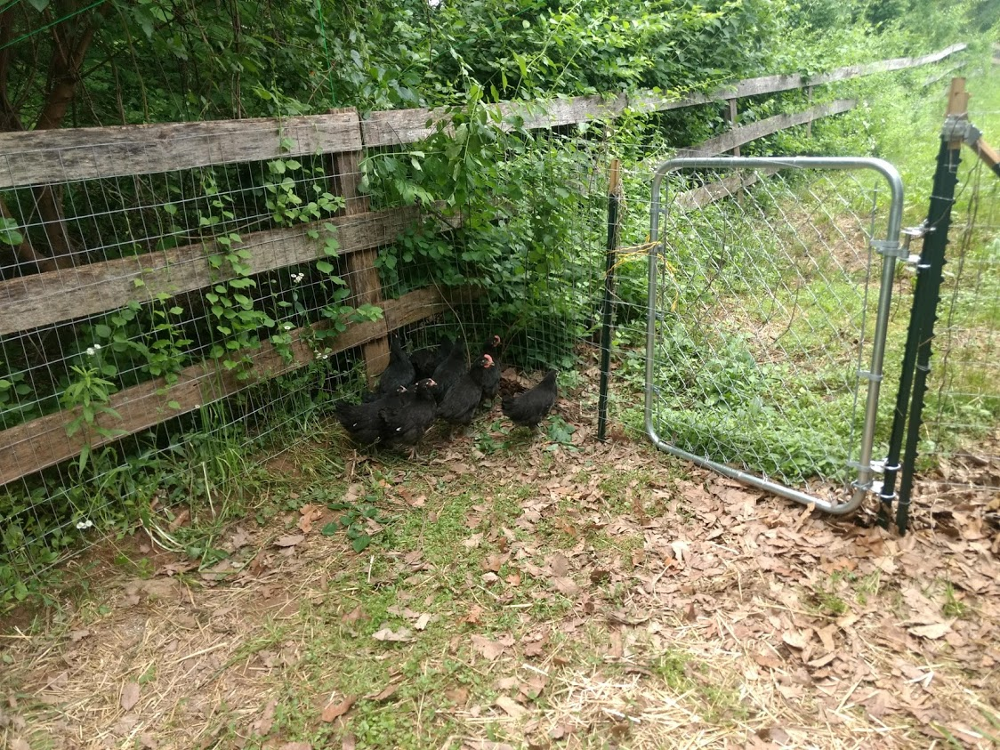

A week ago my neighbor sent me a text indicating that some of my chickenswere on his property.

These chickens have a coop and have a fenced chicken run (the building with the
green roof on the upper left of the photo is
our barn where their coop is.)
But
they have scratched and clawed all the vegetation in their
area which is now
just a patch of dirt. The chickens now often fly over their fence into the neighbor's
yard seeking greener spaces.
{kind=link}
{kind=link}
Because they were flying over the fence searching for vegetation so often,
we would open the gate to allow them on to our pasture, hoping they would stay
on our property!
But rather than stay on our pasture, they crawled under the fence
and into the neighbor's yard.


My neighbor is an urban transplant from Baltimore.......

who is struggling to adapt to life in the country.


To appease our neighbor, we extended the fence to make it more difficult for the
chickens to enter the neighbor's yard.
Notice how the chickens are now on our
side of the property. Before the chickens would have crossed over into the neighbor's
property from that point.

However, the work continues because the chickens can still fly over the fence.
So I need to raise the height of the fence to make that more difficult. I intend to
do this by attaching lattice fencing on top of the present fence.

In the end, a taller fence may not fully solve the problem. But if we can keep
most of the chickens on our side and maintain
good relations with the occasional
delivery of fresh eggs to our neighbors, I think things will work out.